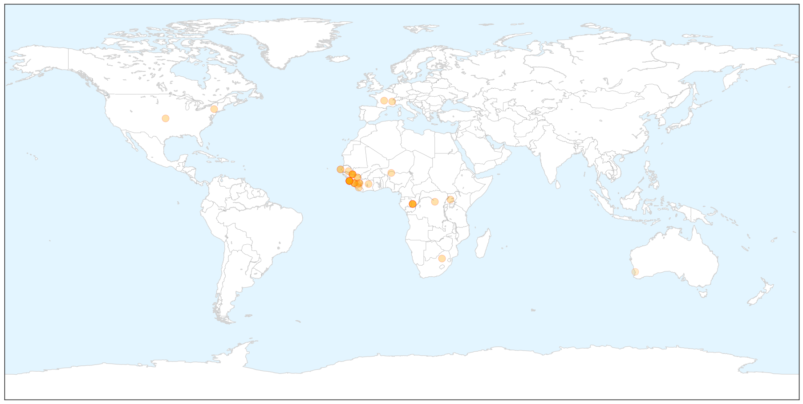

Toggle navigation
Early Warning
Return to Dashboard
Points of Interest
About the Project
Ebola
Mar 30, 2014
Compare to:
-
Dengue Fever
Hemmorhagic Fever
Mold/Fungal Infection
Influenza
Meningitis
Pertussis / Whooping Cough
Middle East Respiratory Syndrome
Cholera
Hepatitis
Chikungunya
Yellow Fever
Bubonic Plague
West Nile Virus
Swine Flu
Measles
Unknown
Mumps
30 Day Trends
Web: 10
alerts
, 0
warnings
Twitter: 3
alerts
, 0
warnings
Top Articles:
1.000
Senegal shuts land border with Guinea to stop Ebola
1.000
Senegal shuts land border with Guinea to stop Ebola
1.000
Guinea seeks to prevent spread of Ebola virus in capital
1.000
West Africa allocates $250,000 to fight Ebola
1.000
Ebola Outbreak Spreads to Conakry, Poses New Challenges
1.000
Guinea battles to contain Ebola as Senegal closes its border (Video)
1.000
Senegal shuts border as Guinea fights Ebola outbreak
1.000
Liberia confirms Ebola cases as deadly virus spreads
1.000
The Portland Press Herald / Maine Sunday Telegram
1.000
Ebola Outbreak In Guinea, Sierra Leone And Libera
1.000
Ebola Outbreak Spreads to Conakry, Poses New Challenges
1.000
Senegal Shuts Land Border With Guinea to Prevent Ebola Spreading
1.000
Guinea battles to contain Ebola as death toll rises
1.000
Guinea: Ebola death toll reaches 70
1.000
Guinea battles Ebola as virus spreads to capital
1.000
Guinea says has contained Ebola outbreak, death toll rises
1.000
Ebola death toll reaches 70 in Guinea
1.000
Ebola Threat Prompts Senegal to Close Its Borders
1.000
Ebola Continues to Ravage Guinea as Death Toll Reaches 70
0.999
Ebola Haemorrhagic Fever, Guinea (Situation as of 30 March 2014) - Guinea
0.998
Senegal shuts border with Guinea to prevent Ebola spreading
0.998
Ebola update: Number of deaths at 70, Senegal closes border
0.998
Senegal shuts border with Guinea to keep out Ebola virus
0.998
Senegal shuts border as Ebola spreads in Guinea
0.996
Guinea battles to contain Ebola epidemic
0.996
Guinea battles to contain Ebola epidemic
0.996
Liberia confirms Ebola's arrival from Guinea
0.996
Senegal seals borders as Guinea Ebola epidemic kills dozens — RT News
0.996
Senegal shuts land border with Guinea to prevent Ebola spreading
0.995
Beware of bats: Guinea issues bushmeat warning after Ebola outbreak
0.995
No Ebola Outbreak In Nigeria – Health Minister
0.993
Senegal closes border with Guinea
0.988
Senegal shuts land border with Guinea to prevent Ebola spreading
0.988
2 cases of Ebola confirmed in Liberia
0.979
2 cases of Ebola confirmed in Liberia
0.799
Wellesley Expert Available to Comment
0.667
Ebola case found in Guinea’s capital
0.618
World broefs: Obama awards Saudi woman
Top Tweets:
No tweets found for Mar 30, 2014
Web/News Articles
X
Tweets
X
Article Locations
X

Article Confidences
X